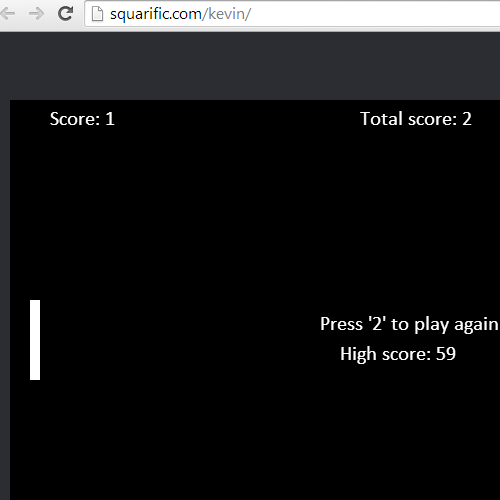

Check out some other projects:

Name:
Squarific homepage
Description:
A collection of my best projects.

Name:
SimpleLogic (Open Source)
Description:
Logic gates simulation in the browser with the ability to share modules. It's also fairly easy to create new nodes.

Name:
NeuralCar 2.0 (Open Source)
Description:
Second version of the car simulation. Each car has a neural network that controls it. Those then go trough generations of evolution till they can drive themself.

Name:
WebReviewPlugin
Description:
A chrome plugin that easily lets you search reviews for websites and review websites yourself.

Name:
Pong (Kevin)
Description:
The classic pong game as a html5 game made for learning purposes.